Putting the chemistry together
Week 5 · Day 23 — one small molecule, every tool in the course
About this lecture
After a hard sprint your blood lactate can jump from about 1 to over 10 mmol/L. People call it “lactic acid”, but at blood pH almost none of it is the acid. The same three-carbon molecule makes yoghurt sour and is polymerised into compostable PLA cups. One small molecule, and every week of this course has something to say about it.
Today we read one molecule with every tool:
- Structure and stereo: groups, CIP priorities, R/S, enantiomers
- Acids and charge: proton transfer, atom audits, pKa and ionised fraction
- Reactions: oxidation, esterification, addition versus substitution
- Evidence: spectra, alternatives, yield and honest conclusions
Yesterday was about yield and evidence; today we use it alongside everything else.
Read the molecule locally first
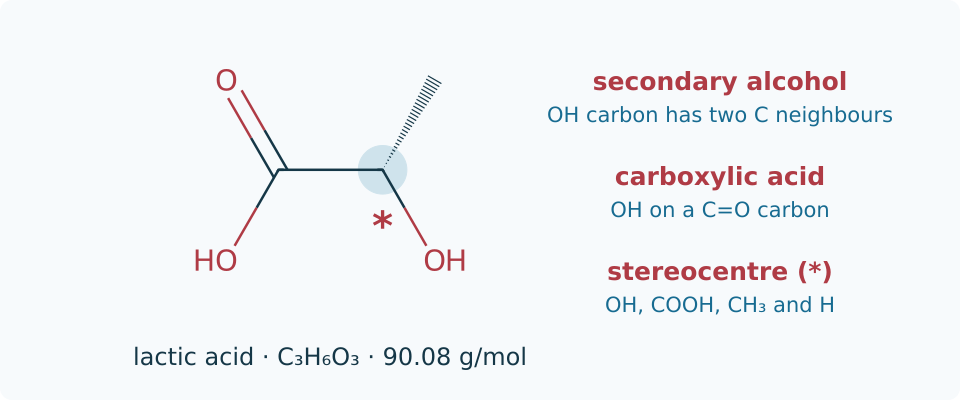
Lactic acid with its stereocentre and functional groups
Before thinking about reactions, name what’s there: a secondary alcohol, a carboxylic acid, and one stereocentre carrying OH, COOH, CH₃ and H.
Try it: why is the alcohol secondary?
Answer. The OH-bearing carbon has two carbon neighbours (CH₃ and COOH) and one H.
Rank the branches at the stereocentre
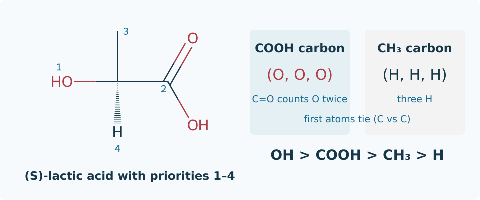
CIP priorities at the lactic acid stereocentre
O beats C beats H. The two carbons tie, so compare the next atoms: the C=O counts its O twice, so COOH is (O, O, O) against CH₃’s (H, H, H).
Try it: give the full priority order at this centre.
Answer. OH > COOH > CH₃ > H: oxygen first, then the two ranked carbons, then H.
Assign R or S with H pointing away
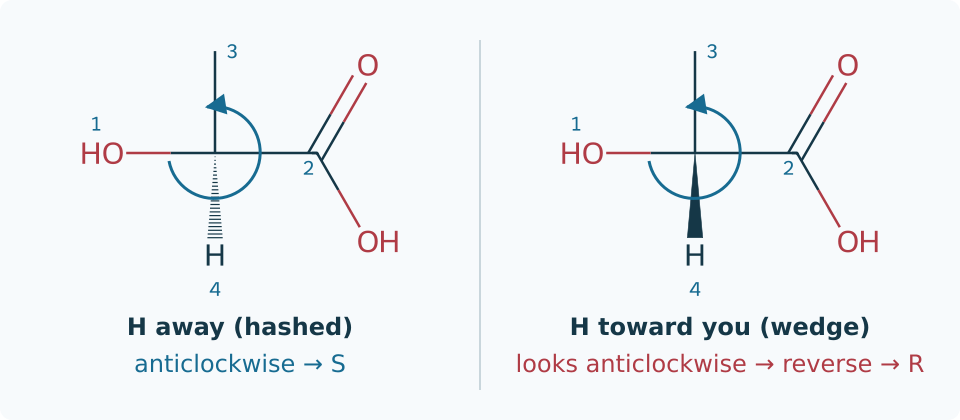
Tracing 1 to 2 to 3 with H away and with H toward you
With H (4) hashed away, trace 1 → 2 → 3: clockwise is R, anticlockwise is S. On the left OH → COOH → CH₃ runs anticlockwise: (S)-lactic acid, the one your muscles make. With H on a wedge, reverse what you see.
Try it: in another drawing, H points toward you and 1 → 2 → 3 looks clockwise. What is the configuration?
Answer. S. With H toward you, reverse the apparent result (or rotate a model until H points away).
Mirror images, not rotations
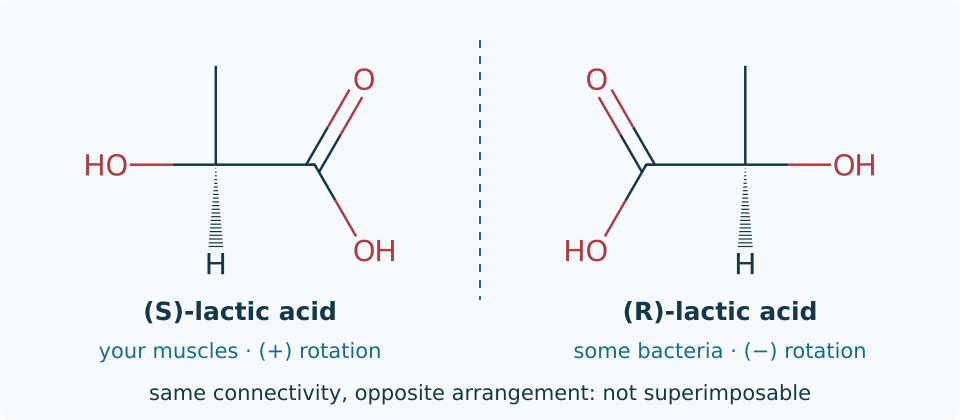
(S)- and (R)-lactic acid drawn as mirror images
Same connectivity, opposite arrangement: enantiomers. No rotation turns one into the other. R/S is a naming rule; the sign of optical rotation has to be measured.
Try it: does rotating the whole drawing 180° on the page give the other enantiomer?
Answer. No. A rigid rotation keeps the configuration. Only swapping two groups at the centre (or reflecting) does.
The simplest reaction: a proton transfer
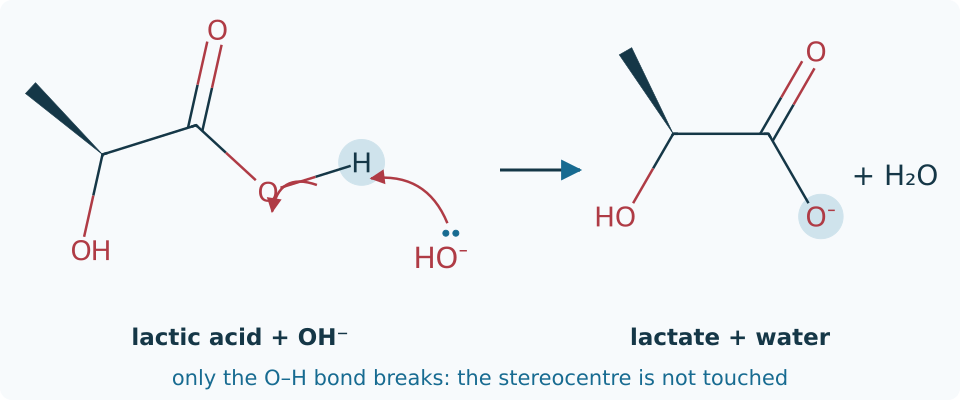
Hydroxide removes the carboxyl proton of lactic acid
One arrow from the base’s lone pair to H, one from the O–H bond onto O. The carboxyl O–H is the acidic one; the alcohol O–H is far less acidic.
Try it: does this step invert the stereocentre?
Answer. No. Only the carboxyl O–H bond changes. No bond to the stereocentre is made or broken.
Audit every atom and the charge
| lactic acid + OH⁻ | lactate + H₂O | ||
|---|---|---|---|
| species | C₃H₆O₃ + HO⁻ | → | C₃H₅O₃⁻ + H₂O |
| C, H, O total | C₃H₇O₄ | C₃H₇O₄ | |
| net charge | −1 | −1 |
The H isn’t lost; it moves to hydroxide. The bonding pair of the old O–H stays on oxygen, which is why that O now carries the −1.
Try it: what goes wrong if you write the products as just lactate?
Answer. You lose H₂O from the inventory: two H, one O. The equation no longer balances, and the proton’s new home is hidden.
At blood pH it’s lactate, not lactic acid

Fraction of lactate against pH for pKa 3.86
f_{\text{A}^-} = \frac{1}{1 + 10^{\,\text{p}K_a - \text{pH}}} \qquad \text{p}K_a = 3.86
Try it: what fraction is lactate at pH 4.86? And at blood pH 7.4?
Answer. At 4.86 the ratio A⁻/HA is 10, so 10/11 ≈ 0.91. At 7.4 it’s about 3500 : 1, so over 99.9 % lactate.
Oxidation turns the stereocentre into a ketone
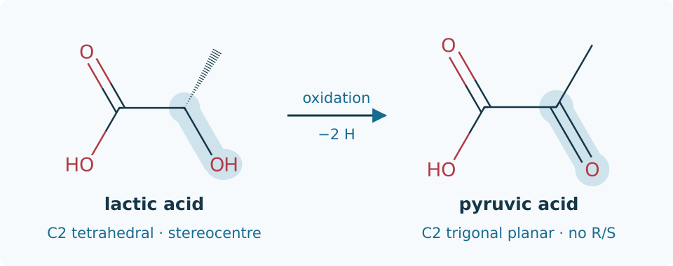
Lactic acid oxidised to pyruvic acid
The secondary alcohol becomes a ketone: pyruvic acid, CH₃C(=O)COOH. In your cells lactate dehydrogenase does this with NAD⁺.
Try it: does pyruvic acid still have an R/S centre?
Answer. No. C2 is now trigonal planar with three groups, so there’s no stereocentre left to label.
Count the oxidation state at the changing carbon
| bond at C2 | contributes | lactic acid C2 | pyruvic acid C2 |
|---|---|---|---|
| C–O (per bond order) | +1 | C–OH: +1 | C=O: +2 |
| C–H | −1 | −1 | none: 0 |
| C–C | 0 | 0 | 0 |
| total | 0 | +2 |
The carbon goes from 0 to +2: an oxidation, even though no O atom was added.
Try it: why does a C–C bond count zero?
Answer. The two atoms have the same electronegativity, so neither one is assigned the bonding electrons.
Esterification: track the alcohol oxygen
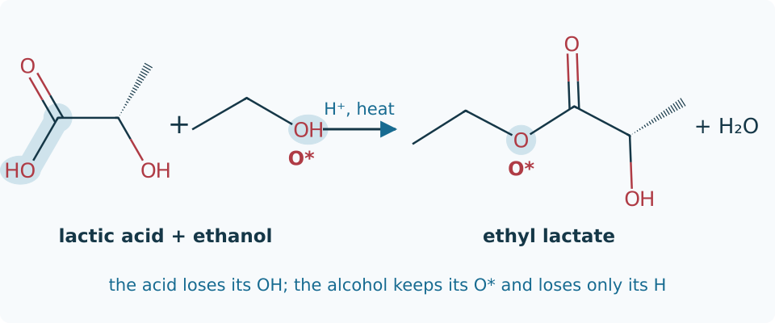
Lactic acid and ethanol give ethyl lactate, with the ethanol oxygen labelled O-star
Fischer esterification is an acyl substitution: ethanol’s O* attacks the carbonyl carbon, and the acid’s OH leaves as water. Ethyl lactate is a biodegradable solvent.
Try it: which two atoms is O* bonded to in the product?
Answer. The acid-derived carbonyl carbon and the ethyl CH₂. The water’s O comes from the acid.
Addition or substitution? Look for a leaving group
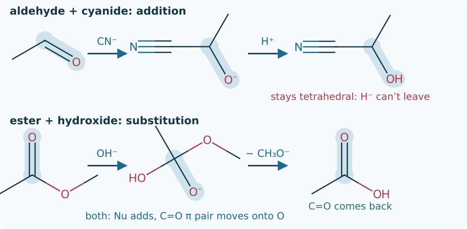
Aldehyde plus cyanide stays tetrahedral; ester plus hydroxide expels methoxide and reforms C=O
Both start the same way: Nu adds, the C=O π pair moves onto O. An ester carries an OR that can leave, so C=O comes back. An aldehyde has only H or C there.
Try it: what’s the first elementary step both pathways share?
Answer. Nucleophilic attack at the carbonyl carbon, giving a tetrahedral alkoxide.
Amino acids carry two charges at pH 7
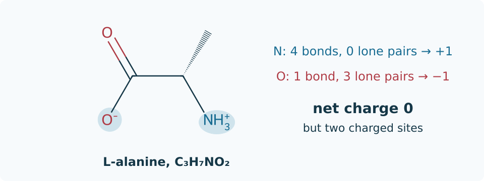
L-alanine as a zwitterion with ammonium and carboxylate shaded
Read the charges from the normal-state table (Day 1). The net charge is zero, but the molecule still has a + and a − end.
Try it: net zero, so does alanine behave like a hydrocarbon in water?
Answer. No. Both charged sites interact strongly with water, which is why amino acids are high-melting and water-soluble.
Change the pH, keep the skeleton
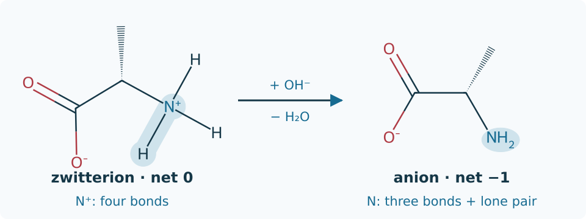
At high pH the ammonium group of alanine loses a proton to hydroxide
Hydroxide removes an N–H proton. The bonding pair goes back to N, which ends with three bonds and a lone pair. No C–C bond is touched.
Try it: is the N in a peptide bond (an amide) basic like this ammonium N?
Answer. No. The amide N’s lone pair is delocalised into the C=O, so it’s barely basic (Week 4).
Identify an unknown: make the evidence agree
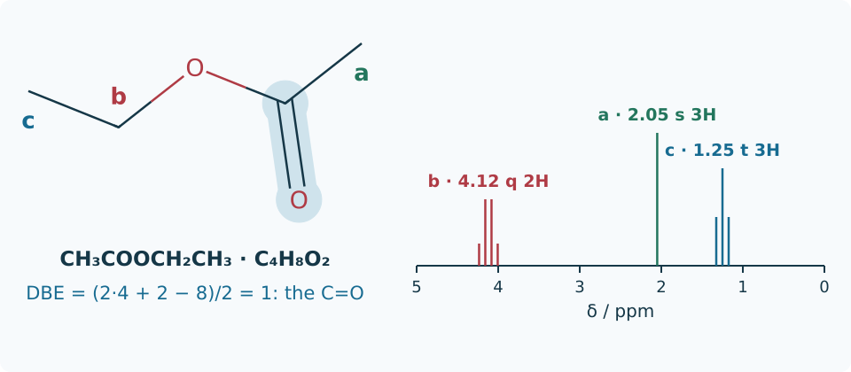
Ethyl acetate with protons a, b and c matched to its NMR spectrum
U1: C₄H₈O₂, IR C=O but no broad O–H, ¹H NMR 4.12 q 2H, 2.05 s 3H, 1.25 t 3H. The quartet and triplet are an ethyl on O; the singlet is a CH₃ next to C=O.
Try it: what does the molecular formula add to this argument?
Answer. DBE = 1, so one C=O and no ring. It also sets the atom budget: every C, H and O must be placed.
Test the alternative before you claim
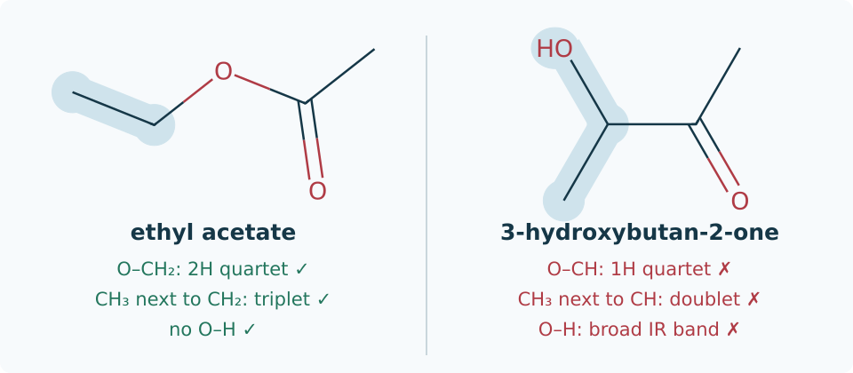
Ethyl acetate and 3-hydroxybutan-2-one with their predicted NMR and IR features
3-hydroxybutan-2-one is also C₄H₈O₂ with a C=O. A good claim says why it doesn’t fit: wrong integrals, wrong splitting and an O–H that isn’t there.
Try it: would a matching C=O band rescue the hydroxyketone?
Answer. No. One shared feature can’t outweigh three predictions that disagree with the data.
A high yield doesn’t prove identity
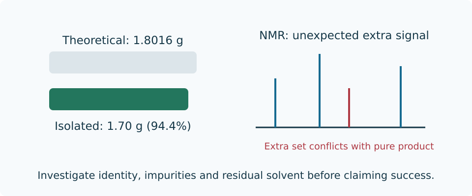
Isolated mass against theoretical mass beside an NMR spectrum with an unexpected peak
0.0100 mol × 180.16 g/mol = 1.8016 g theoretical; 1.70 g isolated is 94.4 %, if the solid is pure product. Unexpected NMR peaks challenge that “if”.
Try it: give two reasons the isolated mass could be too high.
Answer. Residual solvent or water, and unreacted starting material or a side product. One TLC (thin-layer chromatography) spot can hide a co-running impurity.
Writing a conclusion someone can check
| part | for the U1 ester |
|---|---|
| claim | U1 is ethyl acetate |
| evidence | C₄H₈O₂; C=O, no O–H; q 2H, s 3H, t 3H |
| reason | O–CH₂CH₃ explains q/t; CH₃–C=O explains the singlet |
| alternative ruled out | hydroxyketone predicts a doublet and an O–H |
| limitation | simulated data, not a measured real sample |
| next test | measured spectra and a purity check on the isolate |
Try it: why is “it’s the ester because we made the ester” not evidence?
Answer. It’s circular: it assumes the reaction worked, which is exactly what the evidence must test.
A first-move routine for any new problem
| step | ask yourself | came from |
|---|---|---|
| 1 | which groups, charges and stereocentres are there? | Weeks 1–2 |
| 2 | where are the acidic H, the lone pairs, the δ+ carbons? | Days 3, 8 |
| 3 | which bonds change? draw the arrows from electrons | Weeks 3–4 |
| 4 | do atoms, charge and valence balance? | Day 1 |
| 5 | what would the alternative predict, and does the data agree? | Days 21–22 |
Try it: you’re handed a molecule you’ve never seen. What do you do first?
Answer. Read it locally: name the functional groups and look at the atoms around each one, before thinking about any reaction.
Mistakes we see every year
| mistake | fix |
|---|---|
| ranking COOH over CH₃ “because it’s bigger” | compare the next atoms: (O,O,O) vs (H,H,H) |
| forgetting to reverse when H is on a wedge | H toward you: flip the answer |
| thinking R means (+) | the sign of rotation is measured |
| dropping water from a proton transfer | audit atoms and charge on both sides |
| keeping an R/S label on a ketone carbon | trigonal planar: no stereocentre |
| “net zero, so no charges” for alanine | net zero, two charged sites |
| a high yield taken as proof of purity | yield assumes identity; test it |
Summary
| concept | key fact |
|---|---|
| read locally | groups, charges and stereocentres first |
| CIP | OH > COOH > CH₃ > H; H away, clockwise = R |
| enantiomers | mirror images; sign of rotation is measured |
| proton transfer | two arrows; stereocentre untouched; audit atoms |
| ionised fraction | 1/(1 + 10^(pKa − pH)); lactate at pH 7.4 |
| oxidation | lactic → pyruvic acid; C2 goes 0 → +2 |
| addition vs substitution | a leaving group lets C=O come back |
| evidence | claim, evidence, reason, alternative, limitation |
Next: revision on Days 24–25 (spectra and calculations, final synthesis), then the exam. Practice: exercises · self-check